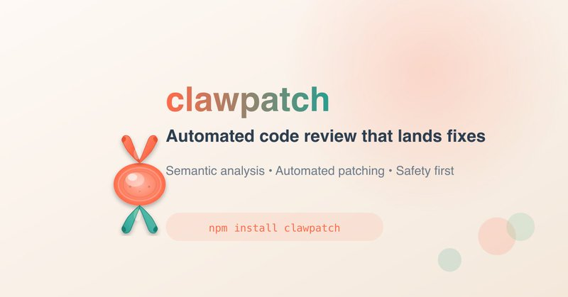
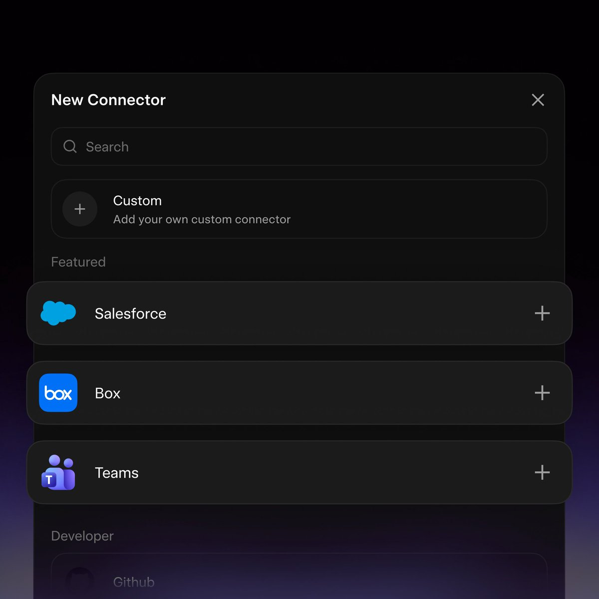
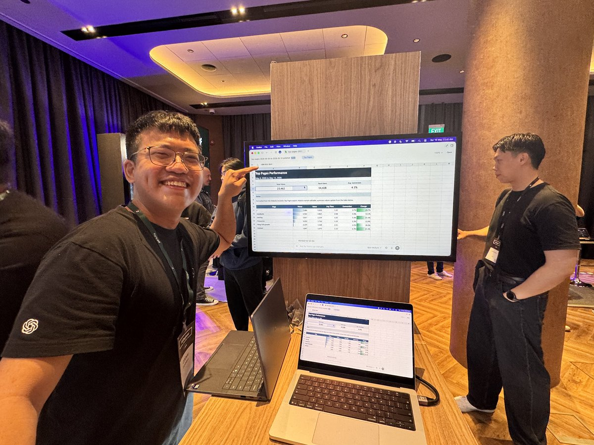
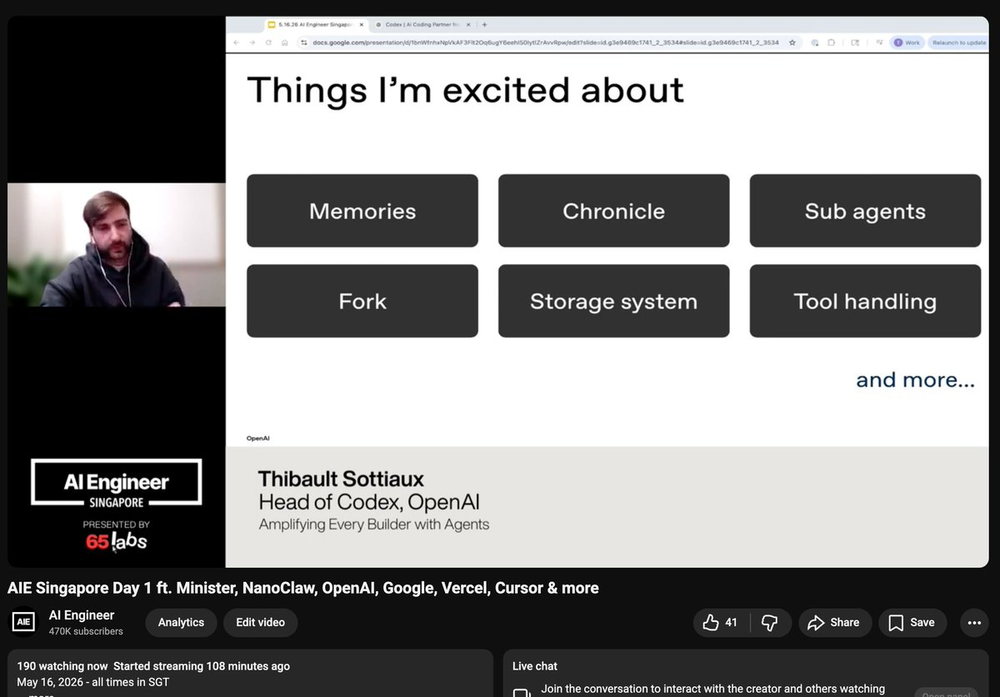

← 返回首页
AI Builders Daily · 2026.5.17
🏗️ AI Builders 日报
每天追踪 AI 领域真正的 builder——那些在研究、创业和产品一线的人。
Yann LeCun
世界模型
Agent 工程化
Codex-native
GitHub Trending
14
今日 Builder
1
播客精选
7
GitHub 热门
今日要点
🧠
Yann LeCun 离开 Meta 后首次深度访谈
— 图灵奖得主直言 LLM 不是通往人类级智能的路径，押注 JEPA 世界模型架构。他于 2025 年底离开 Meta 创立 AMI，指出生成像素是错误方向，VLA 模型已被视为失败。
🔧
Agent 工程化进入深水区
— Peter Steinberger 同时运行 ~100 个 Codex 审查每个 PR，Dan Shipper 复盘 Agent-as-a-Service 实践，Nikunj 被 Claude Code 的 /goal 命令震撼。当 token 成本不再重要，软件该怎么建？
🎙️ 播客精选
Unsupervised Learning Ep 86：Yann LeCun 谈离开 Meta、打破 LLM 范式、以及为什么 Hinton 错了
嘉宾：
Yann LeCun
（图灵奖得主，AMI 创始人）| 主持人：Redpoint Ventures。这是 LeCun 离开 Meta 后首次深度访谈，全面阐述了他对 AI 未来的技术判断。
🧭 LLM 有用，但不是通向 AGI 的路
"它们对语言处理很好，但现实世界比语言复杂得多：高维、连续、嘈杂、混乱。" LeCun 认为纯语言模型永远无法实现真正的物理世界推理。
🌍 世界模型的本质是预测行为后果
"我无法想象一个智能体系统不具备预测自身行为后果的能力。当你做事不考虑后果时，别人会觉得你是个白痴——看看国际政治舞台就知道。"
❌ VLA 模型已被视为失败
视觉-语言-动作模型不够可靠，需要太多训练数据。LeCun 认为在抽象表征空间预测而非像素级别重建才是正解。
🏢 Meta 已不适合基础研究
公司全力追赶 LLM，探索性研究优先级下降，大量制造业应用场景 Meta 也不感兴趣。LeCun 选择离开，2025 年底创立 AMI（Advanced Machine Intelligence）。
关键洞察：
图灵奖得主用脚投票离开大厂，押注完全不同的技术范式，这本身就值得整个行业认真对待。如果 LeCun 是对的，未来三年 AI 的竞争将不是更好的生成模型，而是更好的世界模型——能预测、规划、推理的系统。但世界模型的规模化难度远超 LLM，JEPA 能否在工业场景中证明自己，是 2026 年最值得关注的暗线之一。
🎬 RedpointAI YouTube 频道 →
👷 Builder 动态
Peter Steinberger — OpenClaw 创始人
回应外界对 AI 支出的质疑，展示了一个极端自动化的开发流程：同时运行 ~100 个 Codex 实例审查每个 PR 和 Issue，自动关闭 6 个月前的 bug，每次 commit 都做安全检查，甚至能自动创建 ephemeral 环境录制修复前后的对比视频。发布了
clawpatch 0.1.0
，将代码库映射为语义功能切片自动审查。同时对 Svelte 给出高度评价："相比 React 少了很多陷阱和复杂性，Codex 处理得非常好。"
"
我们在探索一个问题——如果 token 成本不再重要，软件该怎么建？
"
— Peter Steinberger, OpenClaw 创始人

查看原文 ① Codex 审查 →
查看原文 ② clawpatch →
查看原文 ③ Svelte 评价 →
👷 Builder 动态
Aaron Levie — Box CEO
提出"前出部署工程（FDE）"将成为 AI 规模部署的核心竞争力。与软件不同，AI 本质上是持续演进的东西——底层模型升级会显著改变工作流，单一供应商可以跨数千家公司共享最佳实践，比每家公司各自摸索高效得多。另一条关于"无头软件是未来"的观点也引发广泛讨论：当 AI Agent 成为主要用户界面，传统 UI 层将被解耦。

查看原文 ① 前出部署工程 →
查看原文 ② 无头软件 →
👷 Builder 动态
Guillermo Rauch — Vercel CEO
Grok CLI 已支持插件和 Skills 系统，安装 Vercel 插件后即可获得云部署超能力——AI 生成代码后直接部署上线。同时推出
vercel curl
解决 Agent 在 SSO（Okta）保护环境下被 401 拦截的问题。
"
如果你既精通 Agent 管理，又精通基本功，你将势不可挡。
"
— Guillermo Rauch, Vercel CEO
查看原文 ① Grok CLI + Vercel →
查看原文 ② Agent 管理 →
👷 Builder 动态
Swyx — AI Engineer
Codex 在过去三个月彻底改头换面，团队进入了极端的 founder mode。"他们在 Mac 上搞出了 Agentic Excel。" 另一条信息：新加坡 GovTech 负责人估计，未来两年全国将有
13 亿个 Agent
，正在建设国家级 MCP 网关。


查看原文 →
👷 Builder 动态
Dan Shipper — Every CEO
"Codex-native 应用是未来。" 分享了基于 OpenClaw 构建 Agent-as-a-Service 平台的深度复盘：OpenClaw 非常强大但迭代极快，作为中间层构建很痛苦；目前的结论是一个超级 Agent 服务全公司，胜过每人一个 Agent。
查看原文 →
👷 Builder 动态
更多 Builder 观点
Nikunj Kothari · FPV Ventures 合伙人
被 Claude Code 的 `/goal` 命令震撼："它用 2 小时遍历了 2000+ 行数据库、修复了所有产品图片、前端 bug、描述……而我正在和创始人喝咖啡。这就是 AGI 的雏形。"
Sam Altman · OpenAI CEO
回应外界对 AI 能力"退步"的质疑，赞赏团队对待用户反馈的认真态度（即使答案有时是"你只是习惯了当前的魔法水平"）。
Madhu Guru · Google PM
一篇关于 PM 在 AI 时代转型的犀利观察："你不能靠 A/B 测试做出突破性 AI 产品。PM 需要成为发明者，而不是框架执行者。"
Peter Yang · Roblox 产品经理
体验 ChatGPT Finances 后认为"相当不错"，但 AI 在交易分类上仍有困难。提醒用户关闭"为所有人改进模型"开关以保护财务隐私。
Garry Tan · YC 总裁
发布加州选举投票指南，批评"CEO 超额税"实际上是向消费者转嫁成本的反商业政策。
Nikunj 原文 →
Sam Altman 原文 →
Madhu Guru 原文 →
Peter Yang 原文 →
Garry Tan 原文 →
📈 GitHub Trending · 2026.5.17
今日 GitHub 热门项目 TOP 7
注：今日仅收录 7 个项目（通常 25 个），GitHub 可能在维护或调整算法。
1
tinyhumansai/openhuman
⭐ 1,549 · Rust
你的个人 AI 超级智能。私有、简洁且极其强大。
2
ruvnet/RuView
⭐ 1,010 · Rust
将普通 WiFi 信号转化为实时空间智能、生命体征监测和存在检测——无需任何摄像头
3
supertone-inc/supertonic
⭐ 749 · Swift
闪电般快速的端侧多语言 TTS，通过 ONNX 原生运行
4
K-Dense-AI/scientific-agent-skills
⭐ 673 · Python
一套即用的 Agent Skills，覆盖科研、工程、分析、金融和写作
5
colbymchenry/codegraph
⭐ 416 · TypeScript
Claude Code 的预索引代码知识图谱——更少的 token、更少的工具调用、100% 本地
6
oven-sh/bun
⭐ 397 · Rust
极快的 JavaScript 运行时、打包器、测试运行器和包管理器——一体化
7
Anil-matcha/Open-Generative-AI
⭐ 317 · JavaScript
AI 视频平台的开源替代方案——免费 AI 图像和视频生成工作室，200+ 模型，MIT 许可自托管
💭 今日思考
🧠 LLM 霸权 vs 世界模型：范式之争白热化
Yann LeCun 的访谈揭示了一个根本性分歧：当整个行业在疯狂堆叠 LLM 时，图灵奖得主选择了一条完全不同的路。他不是因为内斗离开 Meta，而是因为组织内的风向已经不可能让他推进真正的探索性研究。如果世界模型路线最终胜出，今天所有在 LLM 上投入的资本和技术积累都将面临重估。但 JEPA 能否规模化？世界模型能否在真实工业场景中证明自己？这是 2026 年最值得关注的暗线。
🔧 Agent 工程化：从玩具到武器的跨越
Peter Steinberger 展示的 100 个 Codex 同时审查、Dan Shipper 的超级 Agent 服务全公司、Nikunj 被 /goal 命令震撼——这些信号共同指向一个趋势：Agent 正在从"个人效率工具"进化为"组织级基础设施"。当 token 成本不再重要，当新加坡规划 13 亿 Agent，软件工程的范式正在被重写。不是"AI 取代工程师"，而是"会驾驭 Agent 舰队的工程师取代不会的"。
两条主线共同指向一个趋势：
AI 行业正在经历从"模型竞赛"到"系统竞赛"的迁移。LeCun 的离开象征着"更聪明的模型"路线面临天花板，而 Steinberger 们的实践则证明"更聪明的系统化应用"同样能产生指数级效果。真正的 AI-native 组织不是用了 AI 的组织，而是让 Agent 成为系统默认运行单元的组织。
参考来源
🐦
Peter Steinberger — 100 个 Codex 审查
🐦
Peter Steinberger — clawpatch 0.1.0
🐦
Peter Steinberger — Svelte 评价
🐦
Aaron Levie — 前出部署工程 (FDE)
🐦
Aaron Levie — 无头软件是未来
🐦
Guillermo Rauch — Grok CLI + Vercel 插件
🐦
Guillermo Rauch — Agent 管理 + 基本功
🐦
Madhu Guru — PM 在 AI 时代的转型
🐦
Swyx — Codex founder mode + 新加坡 13 亿 Agent
🐦
Dan Shipper — Codex-native 应用未来
🐦
Nikunj Kothari — Claude Code /goal 震撼
🐦
Sam Altman — 回应 AI 能力质疑
🐦
Peter Yang — ChatGPT Finances 体验
🐦
Garry Tan — 加州选举指南
🎙️
Unsupervised Learning — Yann LeCun 专访
追踪来源包括 YouTube 播客、GitHub Trending、X/Twitter 等一线信源。AI Builders Daily 每日更新。